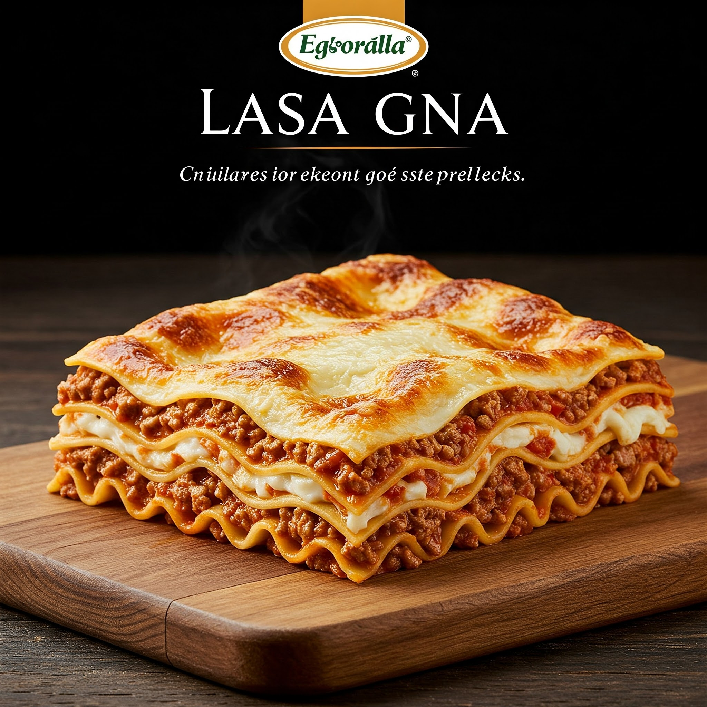

Lasagna Recipe

Lasagna: An Italian Symphony of Flavors in Every Layer
Lasagna, a layered pasta dish originating from Italy, is a perfect combination of tender pasta, rich meat sauce, melted cheese, and creamy béchamel sauce. Each layer creates an unforgettable harmony of flavors, making it a dish suitable for family gatherings or everyday meals.
Ingredients
- Lasagna Pasta: 1 box (about 250 grams)
- Ground Meat: 500 grams
- Onion: 1 , finely chopped
- Garlic: 3 cloves, finely chopped
- Canned Tomatoes: 800 grams (or about 4 fresh tomatoes, boiled and pureed)
- Tomato Sauce: 2 tablespoons
- Tomato Paste: 1 tablespoon
- Dried Oregano: 1 teaspoon
- Dried Basil: 1 teaspoon
- Olive Oil: 2 tablespoons
- Mozzarella Cheese: 300 grams, shredded
- Parmesan Cheese: 100 grams, shredded (optional)
- Sugar, Salt, Black Pepper: To taste
Béchamel Sauce:
- Unsalted Butter: 50 grams
- All-Purpose Flour: 50 grams
- Full Cream Milk: 600 ml
- Nutmeg Powder: A pinch (optional)
- Salt, White Pepper: To taste
Instructions:
- Prepare the Meat Sauce: Heat olive oil in a large pot. Sauté onion and garlic until fragrant. Add ground meat, cook until it changes color. Add canned tomatoes, tomato sauce, tomato paste, sugar, salt, black pepper, oregano, and basil. Stir well and cook until the sauce thickens.
- Make the Béchamel Sauce: Melt butter in a saucepan. Add flour, stir quickly until there are no lumps. Gradually pour in milk while continuing to stir until the sauce thickens and smooth. Season with salt, white pepper, and nutmeg powder.
- Cook the Lasagna Pasta: Cook lasagna pasta according to package instructions until al dente. Drain.
- Assemble the Lasagna: Grease a heat-resistant baking dish with a little olive oil. Arrange lasagna sheets on the bottom of the dish. Pour meat sauce over it, sprinkle with mozzarella and parmesan cheese. Repeat the layers until the ingredients run out. Finally, pour béchamel sauce over it and sprinkle with the remaining cheese.
- Bake the Lasagna: Bake the lasagna in a preheated oven at 180°C for 30-40 minutes, or until the cheese melts and turns golden brown.
- Serve: Let the lasagna cool slightly before cutting and serving.
Enjoy the Deliciousness of Homemade Lasagna
Lasagna is a dish that is rich in flavor and texture, perfect for enjoying with family and friends. By following this recipe, you can create a delicious and appetizing lasagna at home. Enjoy and good luck!
Home